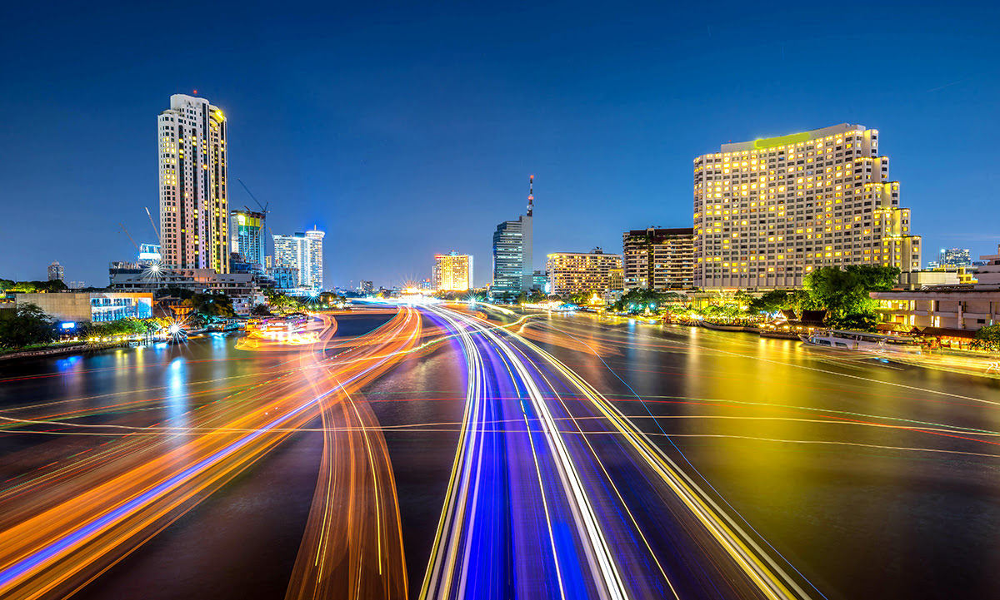

4 แม่น้ำเจ้าพระยา
กรุงเทพ ได้รับฉายาในอดีตว่าเป็น “เวนิสแห่งตะวันออก” ด้วยเครือข่ายของคลองที่ไหลผ่านเมือง คลองเหล่านี้ได้รับการหล่อเลี้ยงโดยแม่น้ำเจ้าพระยาซึ่งมอบชีวิตให้แก่ กรุงเทพ มานานหลายชั่วอายุคน แม้ว่าแม่น้ำจะไม่ได้มีความสำคัญอย่างยิ่งต่อการเดินทางไปไหนมาไหนอีกต่อไปใน กรุงเทพ แต่พื้นที่ ริมแม่น้ำเจ้าพระยา ก็ยังคงเป็นส่วนสำคัญของเมือง เผื่อเวลาชิลที่ ริมแม่น้ำเจ้าพระยา หรือจะล่องเรือชมแม่น้ำเจ้าพระยาก็ผ่อนคลายไม่แพ้กัน แถมยังชมวิวแลนด์มาร์กชื่อดังของ กรุงเทพ ได้จากบนเรืออีกด้วย